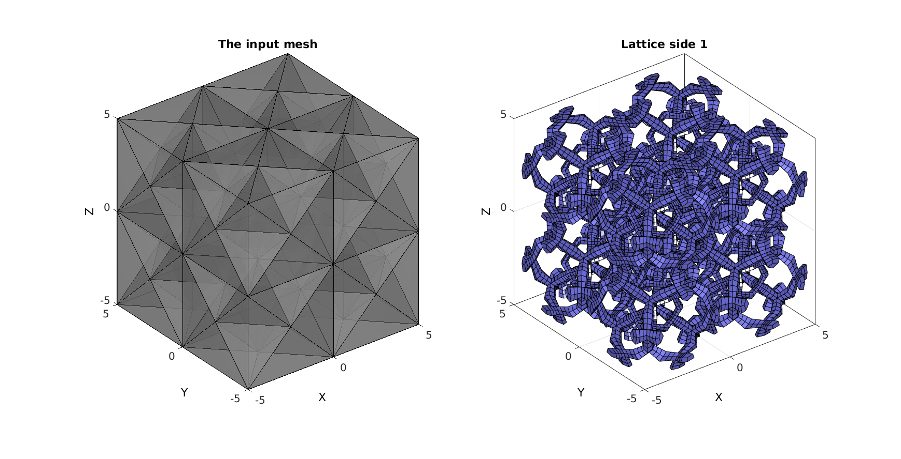
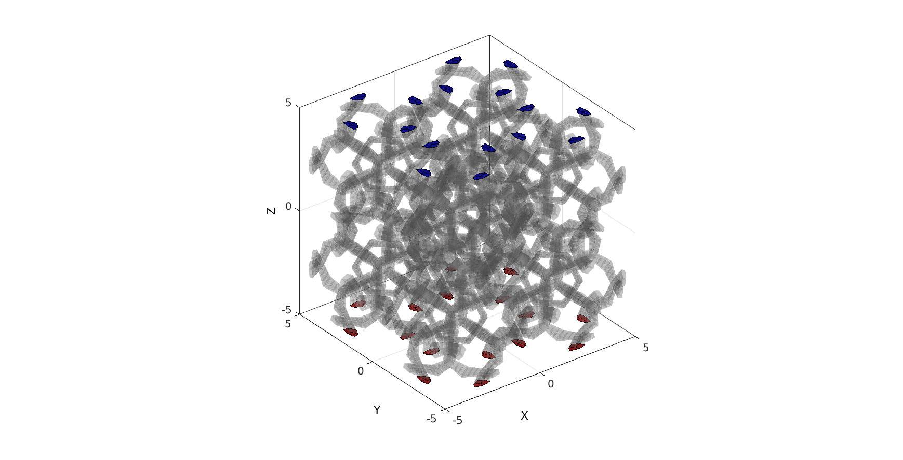
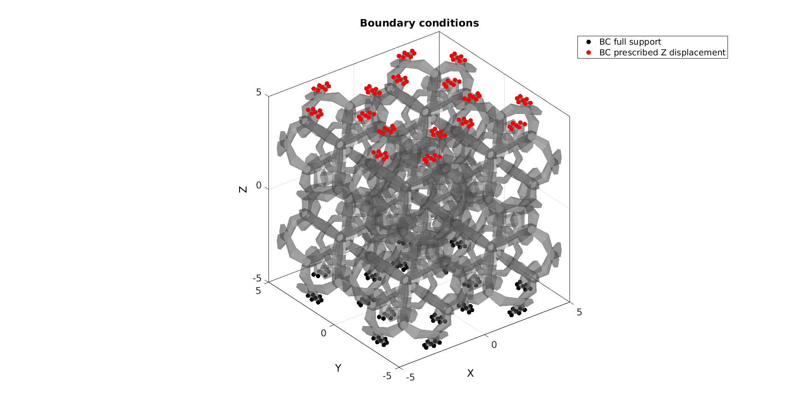
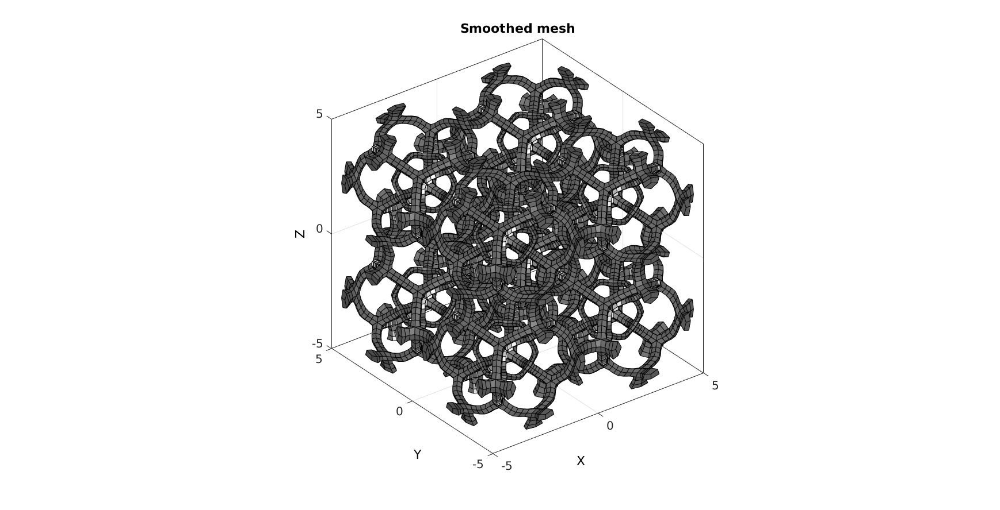
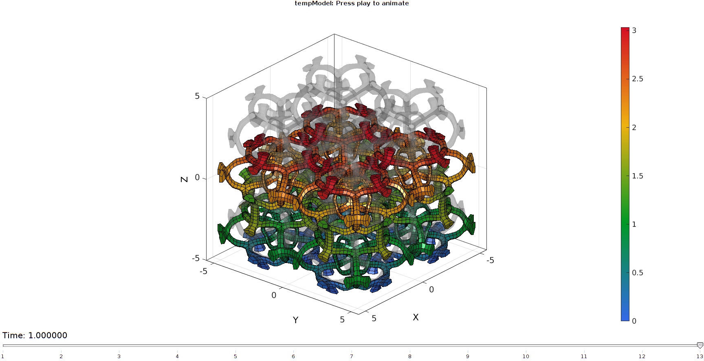

DEMO_febio_0026_hexlattice_compression
Below is a demonstration for:
- Building geometry for a cube with hexahedral elements
- Defining the boundary conditions
- Coding the febio structure
- Running the model
- Importing and visualizing the displacement and stress results
Contents
Keywords
- febio_spec version 2.5
- febio, FEBio
- uniaxial loading
- compression, tension, compressive, tensile
- displacement control, displacement boundary condition
- hexahedral elements, hex8
- cube, box, rectangular
- static, solid
- hyperelastic, Ogden
- displacement logfile
- stress logfile
clear; close all; clc;
Plot settings
Plot settings
fontSize=15; faceAlpha1=0.8; faceAlpha2=1; edgeColor=0.25*ones(1,3); edgeWidth=1.5; markerSize=25; cMap=gjet(4);
Control parameters
% Path names defaultFolder = fileparts(fileparts(mfilename('fullpath'))); savePath=fullfile(defaultFolder,'data','temp'); % Defining file names febioFebFileNamePart='tempModel'; febioFebFileName=fullfile(savePath,[febioFebFileNamePart,'.feb']); %FEB file name febioLogFileName=fullfile(savePath,[febioFebFileNamePart,'.txt']); %FEBio log file name febioLogFileName_disp=[febioFebFileNamePart,'_disp_out.txt']; %Log file name for exporting displacement febioLogFileName_force=[febioFebFileNamePart,'_force_out.txt']; %Log file name for exporting force febioLogFileName_stress=[febioFebFileNamePart,'_stress_out.txt']; %Log file name for exporting stress febioLogFileName_stiffness=[febioFebFileNamePart,'_stiffness_out.txt']; %Log file name for exporting stiffness %Specifying dimensions and number of elements sampleSize=10; %Define applied displacement appliedStrain=0.3; %Linear strain (Only used to compute applied stretch) loadingOption='compression'; % or 'tension' switch loadingOption case 'compression' stretchLoad=1-appliedStrain; %The applied stretch for uniaxial loading case 'tension' stretchLoad=1+appliedStrain; %The applied stretch for uniaxial loading end displacementMagnitude=(stretchLoad*sampleSize)-sampleSize; %The displacement magnitude %Material parameter set c1=1e-3; %Shear-modulus-like parameter m1=6; %Material parameter setting degree of non-linearity k_factor=500; %Bulk modulus factor k=c1*k_factor; %Bulk modulus formulationType='uncoupled'; %coupled % FEA control settings numTimeSteps=10; %Number of time steps desired max_refs=25; %Max reforms max_ups=0; %Set to zero to use full-Newton iterations opt_iter=6; %Optimum number of iterations max_retries=5; %Maximum number of retires dtmin=(1/numTimeSteps)/100; %Minimum time step size dtmax=1/numTimeSteps; %Maximum time step size
Creating example geometry.
X=[-1; 1; 1; -1; -1; 1; 1; -1;]; Y=[-1; -1; 1; 1; -1; -1; 1; 1;]; Z=[-1; -1;-1; -1; 1; 1; 1; 1;]; V=sampleSize*[X(:) Y(:) Z(:)]/2; E=1:8; %Element description of the 8-node cube (hexahedral element) [E,V,C]=subHex(E,V); %Subdevide into 8 sub-cubes [E,V,C]=hex2tet(E,V,C,1); %Convert to tetrahedral elements [F,~]=element2patch(E,C); %Patch data for plotting % Create lattice structure controlParameter.growSteps=1; %0 is normal, positive or negative integers increase or decrease the edge lattice thickness respectively controlParameter.latticeSide=2; %Empty outputs both, 1=side 1 the edge lattice, 2=side 2 the dual lattice to the edge lattice [Es,Vs,Cs]=element2HexLattice(E,V,controlParameter); %Get lattice structure elementMaterialIndices=ones(size(Es,1),1); % Create patch Data for visualization [Fs,CsF]=element2patch(Es,Cs); %Patch data for plotting indB=tesBoundary(Fs,Vs); Fb=Fs(indB,:);
Visualizing input mesh and lattic structures
cFigure; hs=subplot(1,2,1); title('The input mesh','fontSize',fontSize) hold on; gpatch(F,V,0.5*ones(1,3),'k',0.5); axisGeom(gca,fontSize); camlight headlight; lighting flat; subplot(1,2,2); title('Lattice side 1','fontSize',fontSize) hold on; gpatch(Fb,Vs,'bw'); % patchNormPlot(Fs,Vs); axisGeom(gca,fontSize); camlight headlight; lighting flat; drawnow;
faceBoundaryMarker=zeros(size(Fb,1),1); %Find top and bottom face sets [Nb]=patchNormal(Fb,Vs); zVec=[0 0 1]; d=dot(Nb,zVec(ones(size(Nb,1),1),:),2); Z=Vs(:,3); ZF=mean(Z(Fb),2); logicTop_Fb=(d>0.9) & ZF>=(max(Vs(:,3))-eps(sampleSize)); logicBottom_Fb=(d<-0.9) & ZF<=(min(Vs(:,3))+eps(sampleSize)); xVec=[1 0 0]; d=dot(Nb,xVec(ones(size(Nb,1),1),:),2); X=Vs(:,1); XF=mean(X(Fb),2); logicSides_Fb1=(d>0.9) & XF>=(max(Vs(:,1))-eps(sampleSize)); logicSides_Fb2=(d<-0.9) & XF<=(min(Vs(:,1))+eps(sampleSize)); yVec=[0 1 0]; d=dot(Nb,yVec(ones(size(Nb,1),1),:),2); Y=Vs(:,2); YF=mean(Y(Fb),2); logicSides_Fb3=(d>0.9) & YF>=(max(Vs(:,2))-eps(sampleSize)); logicSides_Fb4=(d<-0.9) & YF<=(min(Vs(:,2))+eps(sampleSize)); logicSides_Fb=logicSides_Fb1 | logicSides_Fb2 | logicSides_Fb3 | logicSides_Fb4; faceBoundaryMarker(logicBottom_Fb)=1; faceBoundaryMarker(logicTop_Fb)=2; faceBoundaryMarker(logicSides_Fb)=3; cFigure; hold on; gpatch(Fs,Vs,'kw','none',0.2); gpatch(Fb(faceBoundaryMarker==1,:),Vs,'r','k',1); gpatch(Fb(faceBoundaryMarker==2,:),Vs,'b','k',1); % gpatch(Fb(faceBoundaryMarker==3,:),Vs,'g','k',1); axisGeom(gca,fontSize); colormap(cMap); camlight headlight; lighting flat; drawnow;
DEFINE BC's
%Supported nodes logicRigid=faceBoundaryMarker==1; Fr=Fb(logicRigid,:); bcRigidList=unique(Fr(:)); %Prescribed force nodes logicPrescribe=faceBoundaryMarker==2; Fr=Fb(logicPrescribe,:); bcPrescribeList=unique(Fr(:)); bcPrescribeMagnitudes=displacementMagnitude(ones(1,numel(bcPrescribeList)),:);
Visualize BC's
cFigure; hold on; title('Boundary conditions','FontSize',fontSize); gpatch(Fb,Vs,0.5*ones(1,3),'none',0.4); hl(1)=plotV(Vs(bcRigidList,:),'k.','MarkerSize',markerSize); hl(2)=plotV(Vs(bcPrescribeList,:),'r.','MarkerSize',markerSize); legend(hl,{'BC full support','BC prescribed Z displacement'}) axisGeom; camlight headlight; set(gca,'FontSize',fontSize); drawnow;
[Fb_clean,Vb_clean,indFix]=patchCleanUnused(Fb,Vs);
cPar.Method='HC';
cPar.n=15;
indKeep=Fb_clean(faceBoundaryMarker>0,:);
indKeep=unique(indKeep(:));
cPar.RigidConstraints=indKeep;
[Vb_clean]=tesSmooth(Fb_clean,Vb_clean,[],cPar);
ind=Fb(:);
ind=unique(ind(:));
Vs(ind,:)=Vb_clean;
cFigure; hold on; title('Smoothed mesh','FontSize',fontSize); gpatch(Fs,Vs,'kw','k',1); axisGeom; camlight headlight; set(gca,'FontSize',fontSize); drawnow;
Defining the FEBio input structure
See also febioStructTemplate and febioStruct2xml and the FEBio user manual.
%Get a template with default settings [febio_spec]=febioStructTemplate; %febio_spec version febio_spec.ATTR.version='2.5'; %Module section febio_spec.Module.ATTR.type='solid'; %Control section febio_spec.Control.analysis.ATTR.type='static'; febio_spec.Control.title='Lattice analysis'; febio_spec.Control.time_steps=numTimeSteps; febio_spec.Control.step_size=1/numTimeSteps; febio_spec.Control.time_stepper.dtmin=dtmin; febio_spec.Control.time_stepper.dtmax=dtmax; febio_spec.Control.time_stepper.max_retries=max_retries; febio_spec.Control.time_stepper.opt_iter=opt_iter; febio_spec.Control.max_refs=max_refs; febio_spec.Control.max_ups=max_ups; %Material section switch formulationType case 'coupled' febio_spec.Material.material{1}.ATTR.type='Ogden unconstrained'; febio_spec.Material.material{1}.ATTR.id=1; febio_spec.Material.material{1}.c1=c1; febio_spec.Material.material{1}.m1=m1; febio_spec.Material.material{1}.c2=c1; febio_spec.Material.material{1}.m2=-m1; febio_spec.Material.material{1}.cp=k; case 'uncoupled' febio_spec.Material.material{1}.ATTR.type='Ogden'; febio_spec.Material.material{1}.ATTR.id=1; febio_spec.Material.material{1}.c1=c1; febio_spec.Material.material{1}.m1=m1; febio_spec.Material.material{1}.c2=c1; febio_spec.Material.material{1}.m2=-m1; febio_spec.Material.material{1}.k=k; end %Geometry section % -> Nodes febio_spec.Geometry.Nodes{1}.ATTR.name='nodeSet_all'; %The node set name febio_spec.Geometry.Nodes{1}.node.ATTR.id=(1:size(Vs,1))'; %The node id's febio_spec.Geometry.Nodes{1}.node.VAL=Vs; %The nodel coordinates % -> Elements febio_spec.Geometry.Elements{1}.ATTR.type='hex8'; %Element type of this set febio_spec.Geometry.Elements{1}.ATTR.mat=1; %material index for this set febio_spec.Geometry.Elements{1}.ATTR.name='Cube'; %Name of the element set febio_spec.Geometry.Elements{1}.elem.ATTR.id=(1:1:size(Es,1))'; %Element id's febio_spec.Geometry.Elements{1}.elem.VAL=Es; % -> NodeSets febio_spec.Geometry.NodeSet{1}.ATTR.name='bcRigidList'; febio_spec.Geometry.NodeSet{1}.node.ATTR.id=bcRigidList(:); febio_spec.Geometry.NodeSet{2}.ATTR.name='bcPrescribeList'; febio_spec.Geometry.NodeSet{2}.node.ATTR.id=bcPrescribeList(:); %Boundary condition section % -> Fix boundary conditions febio_spec.Boundary.fix{1}.ATTR.bc='x'; febio_spec.Boundary.fix{1}.ATTR.node_set=febio_spec.Geometry.NodeSet{1}.ATTR.name; febio_spec.Boundary.fix{2}.ATTR.bc='y'; febio_spec.Boundary.fix{2}.ATTR.node_set=febio_spec.Geometry.NodeSet{1}.ATTR.name; febio_spec.Boundary.fix{3}.ATTR.bc='z'; febio_spec.Boundary.fix{3}.ATTR.node_set=febio_spec.Geometry.NodeSet{1}.ATTR.name; febio_spec.Boundary.fix{4}.ATTR.bc='x'; febio_spec.Boundary.fix{4}.ATTR.node_set=febio_spec.Geometry.NodeSet{2}.ATTR.name; febio_spec.Boundary.fix{5}.ATTR.bc='y'; febio_spec.Boundary.fix{5}.ATTR.node_set=febio_spec.Geometry.NodeSet{2}.ATTR.name; % -> Prescribe boundary conditions febio_spec.Boundary.prescribe{1}.ATTR.bc='z'; febio_spec.Boundary.prescribe{1}.ATTR.node_set=febio_spec.Geometry.NodeSet{2}.ATTR.name; febio_spec.Boundary.prescribe{1}.scale.ATTR.lc=1; febio_spec.Boundary.prescribe{1}.scale.VAL=1; febio_spec.Boundary.prescribe{1}.relative=1; febio_spec.Boundary.prescribe{1}.value=displacementMagnitude; %Output section % -> log file febio_spec.Output.logfile.ATTR.file=febioLogFileName; febio_spec.Output.logfile.node_data{1}.ATTR.file=febioLogFileName_disp; febio_spec.Output.logfile.node_data{1}.ATTR.data='ux;uy;uz'; febio_spec.Output.logfile.node_data{1}.ATTR.delim=','; febio_spec.Output.logfile.node_data{1}.VAL=1:size(Vs,1); febio_spec.Output.logfile.node_data{2}.ATTR.file=febioLogFileName_force; febio_spec.Output.logfile.node_data{2}.ATTR.data='Rx;Ry;Rz'; febio_spec.Output.logfile.node_data{2}.ATTR.delim=','; febio_spec.Output.logfile.node_data{2}.VAL=1:size(Vs,1); febio_spec.Output.logfile.element_data{1}.ATTR.file=febioLogFileName_stress; febio_spec.Output.logfile.element_data{1}.ATTR.data='sz'; febio_spec.Output.logfile.element_data{1}.ATTR.delim=','; febio_spec.Output.logfile.element_data{1}.VAL=1:size(Es,1);
Quick viewing of the FEBio input file structure
The febView function can be used to view the xml structure in a MATLAB figure window.
febView(febio_spec); %Viewing the febio file
Exporting the FEBio input file
Exporting the febio_spec structure to an FEBio input file is done using the febioStruct2xml function.
febioStruct2xml(febio_spec,febioFebFileName); %Exporting to file and domNode
Running the FEBio analysis
To run the analysis defined by the created FEBio input file the runMonitorFEBio function is used. The input for this function is a structure defining job settings e.g. the FEBio input file name. The optional output runFlag informs the user if the analysis was run succesfully.
febioAnalysis.run_filename=febioFebFileName; %The input file name febioAnalysis.run_logname=febioLogFileName; %The name for the log file febioAnalysis.disp_on=1; %Display information on the command window febioAnalysis.disp_log_on=1; %Display convergence information in the command window febioAnalysis.runMode='external';%'internal'; febioAnalysis.t_check=0.25; %Time for checking log file (dont set too small) febioAnalysis.maxtpi=1e99; %Max analysis time febioAnalysis.maxLogCheckTime=3; %Max log file checking time [runFlag]=runMonitorFEBio(febioAnalysis);%START FEBio NOW!!!!!!!!
%%%%%%%%%%%%%%%%%%%%%%%%%%%%%%%%%%%%%%%%%%%%% --- STARTING FEBIO JOB --- 08-Jul-2018 06:08:07 Waiting for log file... Proceeding to check log file...08-Jul-2018 06:08:08 ------- converged at time : 0.1 ------- converged at time : 0.181833 ------- converged at time : 0.25767 ------- converged at time : 0.33834 ------- converged at time : 0.419009 ------- converged at time : 0.503545 ------- converged at time : 0.591173 ------- converged at time : 0.681276 ------- converged at time : 0.773359 ------- converged at time : 0.867024 ------- converged at time : 0.961957 ------- converged at time : 1 --- Done --- 08-Jul-2018 06:08:35

Import FEBio results
if runFlag==1 %i.e. a succesful run
% Importing nodal displacements from a log file [~, N_disp_mat,~]=importFEBio_logfile(fullfile(savePath,febioLogFileName_disp)); %Nodal displacements N_disp_mat=N_disp_mat(:,2:end,:); sizImport=size(N_disp_mat); sizImport(3)=sizImport(3)+1; N_disp_mat_n=zeros(sizImport); N_disp_mat_n(:,:,2:end)=N_disp_mat; N_disp_mat=N_disp_mat_n; DN=N_disp_mat(:,:,end); DN_magnitude=sqrt(sum(DN(:,3).^2,2)); Vs_def=Vs+DN; [CF]=vertexToFaceMeasure(Fb,DN_magnitude); % Importing element stress from a log file [time_mat, E_stress_mat,~]=importFEBio_logfile(fullfile(savePath,febioLogFileName_stress)); %Nodal forces time_mat=[0; time_mat(:)]; %Time stress_cauchy_sim=[0; mean(squeeze(E_stress_mat(:,end,:)),1)'];
Plotting the simulated results using anim8 to visualize and animate deformations
% Create basic view and store graphics handle to initiate animation hf=cFigure; %Open figure gtitle([febioFebFileNamePart,': Press play to animate']); hp=gpatch(Fb,Vs_def,CF,'k',1); %Add graphics object to animate gpatch(Fb,Vs,0.5*ones(1,3),'none',0.25); %A static graphics object axisGeom(gca,fontSize); colormap(gjet(250)); colorbar; caxis([0 max(DN_magnitude)]); axis([min([Vs_def(:,1);Vs(:,1)]) max([Vs_def(:,1);Vs(:,1)])... min([Vs_def(:,2);Vs(:,2)]) max([Vs_def(:,2);Vs(:,2)])... min([Vs_def(:,3);Vs(:,3)]) max([Vs_def(:,3);Vs(:,3)]) ]); %Set axis limits statically view(130,25); %Set view direction camlight headlight; % Set up animation features animStruct.Time=time_mat; %The time vector for qt=1:1:size(N_disp_mat,3) %Loop over time increments DN=N_disp_mat(:,:,qt); %Current displacement DN_magnitude=sqrt(sum(DN.^2,2)); %Current displacement magnitude Vs_def=Vs+DN; %Current nodal coordinates [CF]=vertexToFaceMeasure(Fb,DN_magnitude); %Current color data to use %Set entries in animation structure animStruct.Handles{qt}=[hp hp]; %Handles of objects to animate animStruct.Props{qt}={'Vertices','CData'}; %Properties of objects to animate animStruct.Set{qt}={Vs_def,CF}; %Property values for to set in order to animate end anim8(hf,animStruct); %Initiate animation feature drawnow;
end

GIBBON www.gibboncode.org
Kevin Mattheus Moerman, gibbon.toolbox@gmail.com
GIBBON footer text
License: https://github.com/gibbonCode/GIBBON/blob/master/LICENSE
GIBBON: The Geometry and Image-based Bioengineering add-On. A toolbox for image segmentation, image-based modeling, meshing, and finite element analysis.
Copyright (C) 2018 Kevin Mattheus Moerman
This program is free software: you can redistribute it and/or modify it under the terms of the GNU General Public License as published by the Free Software Foundation, either version 3 of the License, or (at your option) any later version.
This program is distributed in the hope that it will be useful, but WITHOUT ANY WARRANTY; without even the implied warranty of MERCHANTABILITY or FITNESS FOR A PARTICULAR PURPOSE. See the GNU General Public License for more details.
You should have received a copy of the GNU General Public License along with this program. If not, see http://www.gnu.org/licenses/.